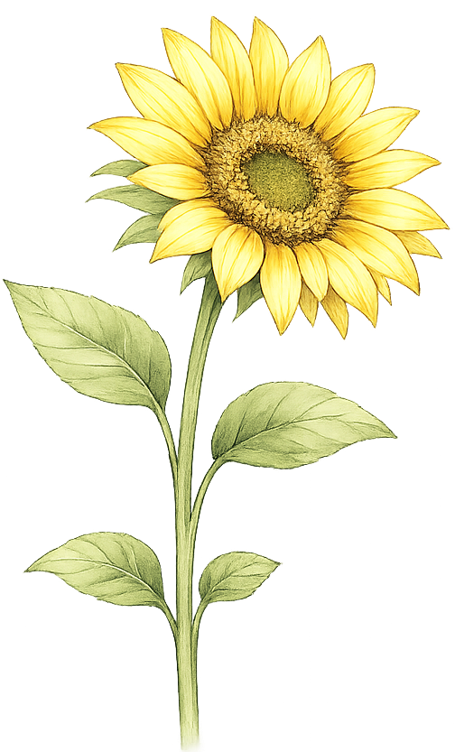

デザインからコーディングまで、一つひとつ丁寧に取り組んだ作品たちです。

架空の紅茶ブランドを想定し、ターゲット設定・サイト設計・デザイン・実装まで一貫して制作。 上品でシンプルなデザインを追求し、忙しい日常でも直感的に操作できる、わかりやすい画面構成を目指しました。

20代女性向けの旅系Instagramバナーを制作。 角島大橋をテーマに、温かみのあるカラーとナチュラルな世界観で「次の休日に行きたくなる」デザインを意識しました。
くわしく見る →
20代女性向けの旅行Instagramバナーを制作。 国内旅行をテーマに、温かみのあるカラーとナチュラルな世界観で「次の旅行先を探したくなる」デザインを意識しました。
くわしく見る →
20代女性向けのグルメイベントInstagramバナーを制作。 全国グルメフェスをテーマに、にぎやかさと親しみやすさを両立し、「次の休日に行ってみたくなる」デザインを意識しました。
くわしく見る →
なぜこの色か、なぜこの配置か。一つひとつに理由を持っていたい性格です。
自分の中に芯を持って、コツコツ積み上げるものづくりが好きです。
お仕事のご相談・ご質問など、いつでもお待ちしています。
通常3営業日以内にお返事します。